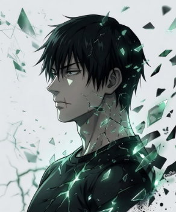

The languages and tools I reach for most — organized by where I use them.
A few things I've built while learning — each one taught me something the lectures didn't.
My degree program and the milestones along the way.
Open to internships, collaborations, and interesting problems. Reach out — I reply fast.